The ZDefocus node blurs the image according to a depth map channel. This allows you to simulate depth-of-field (DOF) blurring.
|
|
| The original image. |
|
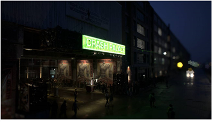 |
| Using ZDefocus to simulate a more narrow depth of field. In this case, areas under the green sign remain in focus, whereas areas in front of and behind it are blurred. Any defocused highlights in the image bloom in the shape of the filter image, creating a bokeh effect. |
In order to defocus the image, ZDefocus splits the image up into layers, each of which is assigned the same depth value everywhere and processed with a single blur size. After ZDefocus has processed all the layers, it blends them together from the back to the front of the image, with each new layer going over the top of the previous ones. This allows it to preserve the ordering of objects in the image.
Here's a quick overview of the workflow:
| 1. | Create a ZDefocus node and connect it to your script. |
See Connecting ZDefocus.
| 2. | Adjust the blur settings. |
See Adjusting the Blur Settings.
| 3. | Adjust the shape of any out-of-focus highlights. |
See Adjusting the Shape of Out-of-Focus Highlights.
| 4. | If necessary, enhance the highlights to make lens shape effects more visible. |
See Enhancing the Out-of-Focus Highlights.
| 5. | If necessary, mask the blur effect. |
TIP: You can check Use GPU if available to have the node run on the graphics processing unit (GPU) rather than the central processing unit (CPU). The output between the GPU and CPU is identical on NVIDIA GPUs, but using the GPU can significantly improve processing performance.
Nuke supports AMD GPUs on late 2013 Mac Pro 6,1 and mid 2015 Mac Pro 11,5, running OS X 10.9.3 'Mavericks', or later. While, in some cases the bit-wise equality between GPU and CPU holds, for some operations there are limitations to the accuracy possible with this configuration.
For more information on the minimum requirements, please see Requirements for GPU Acceleration or refer to the Nuke Release Notes available in Help > Release Notes.
You can select the GPU to use in the Preferences. Press Shift+S to open the Preferences dialog, make sure you’re viewing the Preferences > Performance > Hardware tab, and set default blink device to the device you want to use. You must restart Nuke for the change to take effect.
If you are using a render license of Nuke, you need to add --gpu on the command line.
To connect ZDefocus:
| 1. | Create a ZDefocus node by clicking Filter > ZDefocus. |
| 2. | Connect the ZDefocus node’s image input to the image you want to blur. |
Note that this image also needs to contain a depth map channel. If your depth channel and rgba channels exist in two different files, you can use a ShuffleCopy node to combine them.
| 3. | Use the channels dropdown menu to select the channels you want to blur. |
| 4. | Set depth channel to the channel in the image input that contains the depth map. By default, the depth information is taken from depth.Z. |
Note that the depth map should not be anti-aliased. If it is, pixels along an edge between two objects can be assigned a depth that is in-between the depth of the front object and back objects. This looks wrong, as it suggests that those edge pixels are floating somewhere between the objects.
| 5. | If you want to use your own filter image (rather than the predefined disc or bladed images), connect that to the ZDefocus node’s filter input and set filter type to image in the node’s properties. |
The filter image represents the shape and size of the camera aperture used to shoot the input footage. As the clip in the image input is blurred, any highlights in the clip bloom in the shape of the filter image, creating a bokeh effect.
NOTE: Loading scripts from pre-Nuke 8.0v7 enables the legacy resize mode checkbox automatically, for backward compatibilty, and uses the filter bounds dropdown to determine how images used in filtering are resized.
Adding new ZDefocus nodes hides the legacy resize mode checkbox and allows you to use the image filter dropdown to give you more flexibility when calculating blur.
See Using a Custom Filter Image for more information.
You can create a filter image using the Roto node (Draw > Roto) or the Flare node (Draw > Flare), for example.
Note that you don’t necessarily need to crop the filter image to a smaller size, as fast Fourier transforms are used to speed up convolutions with large filter images.
| 6. | Attach a Viewer to the ZDefocus node. |
|
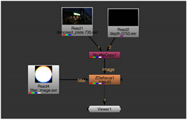 |
| A ZDefocus script. |
| 7. | Proceed to Adjusting the Shape of Out-of-Focus Highlights below. |
To adjust the Blur settings:
| 1. | Use math to specify how you want to use the depth channel to calculate the distance between the camera and an object. For example, some programs use higher values to denote further away, while in others they mean closer to the camera: |
• direct - The Z value in the depth channel directly controls blur. For example, if Z is 0.5, then the blur size is 0.5 times the value of the size control (unless this is bigger than maximum, in which case it is clamped to maximum).
• depth - The Z value in the depth channel is the distance between the camera and whatever is in the image at that pixel.
• far = 0 - The Z value in the depth channel is equal to 1/distance. The values are expected to decrease from large positive values close to the camera to zero at infinity. This is compatible with depth maps generated by Nuke and RenderMan.
• far = 1 - Near plane = 0, far plane = 1. This is compatible with depth maps generated by OpenGL.
• -direct - As with the direct mode, the Z value in the depth channel directly controls blur. In other words, each layer is blurred by the same amount as in the direct mode. However, in this mode, the layers are interpreted as being in the opposite order, so a higher depth value places a layer in front of another rather than behind it.
• -depth - The Z value in the depth channel is -distance in front of the camera. This is the same as depth, but the distances are negative to start with.
• far = -0 - The Z value in the depth channel is equal to -1/distance. This is compatible with depth maps generated by Maya.
• far = -1 - Near plane = 0, far plane = -1.
| 2. | In the Viewer, drag the focal point widget on top of the area that you want to be entirely in focus. |
This automatically updates the focal point coordinates in the ZDefocus properties and sets the focus plane control to the Z depth value at those coordinates. Any layers with this Z depth value are left in focus. You can also set a depth slice around the focus plane that is in focus (as described in step 4), but any other areas of the image are blurred according to the depth map.
|
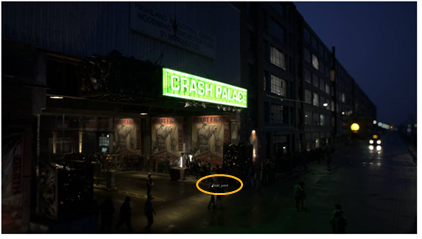 |
| Focal point widget under the green sign. |
| 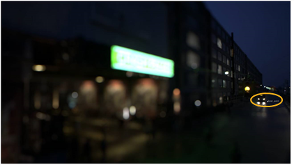 |
| Focal point widget near the cars in the distance. |
TIP: The fill foreground control, enabled by default, attempts to compensate for missing information by filling regions in the foreground which are revealed when the foreground goes out of focus. However, because the true image information isn't available in these regions, fill foreground can sometimes introduce undesirable artefacts by adding things which aren't there.
If you see blurry artefacts in the foreground, rather than sharp edge artefacts, try disabling this control.
To better see the effect of your changes, you can also set output to focal plane setup. ZDefocus now displays depth-of-field (DOF) info in the rgb channels:
• red - Less than DOF (in front of the area that’s in focus).
• green - Inside DOF (in focus). Note that if depth of field is set to 0, nothing is displayed in green.
• blue - Greater than DOF (behind the area that’s in focus).
When show image is enabled, this information is overlaid upon the input image.
|
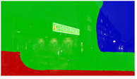 |
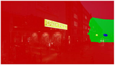 |
| Focal point widget under the green sign. |
Focal point widget near the cars in the distance. |
| 3. | To widen the area that is entirely in focus, increase depth of field. This sets a depth slice around the focus plane that is entirely in focus (and shown in green whenever output is set to focal plane setup). True theoretical depth of field would set this to zero. |
|
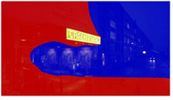 |
|
| Depth of field set to 0. | Depth of field set to 1. |
| 4. | To apply a small amount of blur to the in-focus region, make sure blur inside is enabled. This gives a smoother transition between the in-focus region and the out-of-focus regions around it. |
| 5. | Set output back to result and adjust the amount of blur at infinite depth by setting the size value. Note that the amount of blur nearer the camera than the focus plane may be larger. |
If you have set math to direct, the size is multiplied by the depth to give the blur size at that depth. Setting size to 1 allows you to use the values in the depth map as the blur size directly.
| 6. | If you increased the size value in step 5, it’s a good idea to also increase the maximum value. No blurring greater than this value is generated no matter where the object is in relation to the camera. |
For maximum processing speed, you may want to keep this value as low as possible.
| 7. | By default, automatic layer spacing is enabled, which means ZDefocus automatically works out how many depth layers to use, based on the maximum blur size (maximum). In this mode, the layers are closer together near to the focal plane, where a small change in the blur amount is more obvious, and increasingly more widely-spaced further away (this is equivalent to setting layer curve to a value of 1 when controlling the layers manually; see step 8). |
To visualize the layers, you can set output to layer setup. This is like focal plane setup, but displays depth-of-field (DOF) information after the depth has been divided into layers.
|
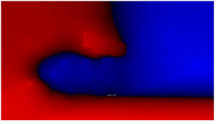 |
| Output set to layer setup. |
The maximum number of blur sizes that are used between 0 and maximum is 256. This means you can have up to 256 layers behind the focal plane, and up to 256 in front of it as well.
| 8. | If you uncheck automatic layer spacing, you can control the number of layers manually using depth layers. Note that the more layers you use, the longer it takes to process the blur. |
|
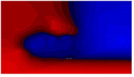 |
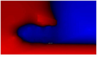 |
| Depth layers set to 10. | Depth layers set to 50. |
If necessary, you can also increase layer curve to concentrate the layers around the focal plane. The default value of 0 produces evenly spaced layers.
|
|
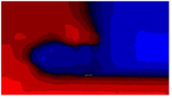 |
| Layer curve set to 0. This produces evenly spaced layers. |
Increasing the layer curve value concentrates the layers around the focal plane. |
| 9. | Proceed to Adjusting the Shape of Out-of-Focus Highlights. |
As the clip in the image input is blurred, any out-of-focus highlights (bokeh) in the clip assume the shape of the filter image (of the filter type selected).
|
|
|
| The original image. | Out-of-focus highlights (bokeh) in the shape of the filter image. |
How you create the filter image is up to you. You can:
• Use a predefined disc shape as the filter image. See Using a Predefined Disc Image.
• Use a predefined bladed image (polygon) as the filter image. See Using a Predefined Bladed Image.
• Use your own custom image in the filter input as the filter image. See Using a Custom Filter Image.
| 1. | To see the effect of your changes, set output in the ZDefocus controls to filter shape setup. |
| 2. | Set filter type to disc. |
| 3. | Use the filter shape control to dissolve the filter shape between Gaussian at 0 and disc at 1. |
|
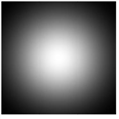 |
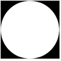 |
| Filter shape set to 0 (Gaussian). |
Filter shape set to 1 (disc). This is the default value. |
| 4. | Use the aspect ratio control to set the filter aspect ratio, which is 1:1 by default. Values less than 1 squeeze the filter on the x axis, and values larger than 1 squeeze it on the y axis. |
This allows you to simulate the cat's eye effect, caused by vignetting inherent within some lens designs.
|
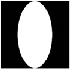 |
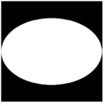 |
| Aspect ratio set to 0.5. |
Aspect ratio set to 1.5. |
| 5. | Proceed to Enhancing the Out-of-Focus Highlights. |
| 1. | To see the effect of your changes, set output in the ZDefocus controls to filter shape setup. |
| 2. | Set filter type to bladed. |
| 3. | Use the blades control to set the number of iris blades that make up the camera's diaphragm. A value of 3 produces a triangle, 4 a square, 5 a pentagon, 6 a hexagon, and so on. |
This field only accepts integers larger than 1.
|
|
|
| Blades set to 5. This is the default value. |
Blades set to 8. |
| 4. | Adjust roundness to control the rounding of the filter polygon’s sides. A value of 0 equals no rounding. |
|
|
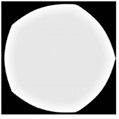 |
| Roundness set to 0. |
Roundness set to 8. |
| 5. | Use rotation to rotate the filter image in degrees. Positive values produce counter-clockwise rotation, and vice-versa. |
| 6. | Use the aspect ratio control to set the filter aspect ratio, which is 1:1 by default. Values less than 1 squeeze the filter on the x axis, and values larger than 1 squeeze it on the y axis. |
This allows you to simulate the cat's eye effect, caused by vignetting inherent within some lens designs.
|
|
|
| Aspect ratio set to 0. |
Aspect ratio set to 2. |
| 7. | To adjust the distribution of light inside the out-of-focus highlights: |
• Adjust inner size to control the size of the inner polygon, as a percentage of the outer polygon.
|
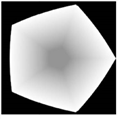 |
|
| Inner size set to 0.2. |
Inner size set to 0.8. |
• Use inner feather to add outward or inward feathering around the inner polygon. With values larger than 0.5, your feather effect is outward and, respectively, if your values are smaller than 0.5, the feather effect is inward. A value of 0.5 produces no feathering.
|
|
|
| Inner feather set to 0.2. |
Inner feather set to 0.8. |
• Adjust inner brightness to control the brightness of the inner polygon, where 0 is equal to black and 1 to white.
|
|
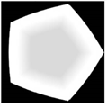 |
| Inner brightness set to 0.3. |
Inner brightness set to 0.7. |
• If you want to simulate catadioptric lenses, check catadioptric. When using catadioptric lenses, the defocused areas of the image are annular, producing donut-shaped bokeh. You can use catadioptric size to adjust the size of the catadioptric hole in the filter.
|
|
|
| Catadioptric size set to 0.3. |
Catadioptric size set to 0.7. |
| 8. | Proceed to Enhancing the Out-of-Focus Highlights. |
| 1. | Set filter type in the ZDefocus controls to image. |
This tells ZDefocus to use the filter input rather than a predefined shape as the filter image.
Note that the filter image can be a color image. This can be useful, for example, if you want to add color fringing to your out-of-focus highlights to simulate chromatic aberration.
|
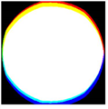 |
| The filter image. |
| 2. | If you want to display the filter image in the Viewer, set output to filter shape setup. |
NOTE: Loading scripts from pre-Nuke 9.0v2 enables the legacy resize mode checkbox automatically, for backward compatibilty, and uses the filter bounds dropdown to determine how images used in filtering are resized.
Adding new ZDefocus nodes hides the legacy resize mode checkbox and allows you to use the image filter dropdown to give you more flexibility when calculating blur.
| 3. | To select what channel to use from the filter input, do one of the following: |
• Set the filter channel dropdown menu to the channel you want to use. By default, this menu is set to rgba.alpha.
• To use the same channels from the filter input as the image input (that is, whatever channels is set to), check use input channels.
| 4. | In newer Nuke scripts, use the image filter dropdown to select the required filter. See Choosing a Filtering Algorithm for more information on the available filters. |
NOTE: When using filters that employ sharpening, such as Rifman and Lanczos, you may see a haloing effect. If necessary, check clamp image filter to correct this problem.
In older Nuke scripts with legacy resize mode enabled, use the filter bounds dropdown to select whether you want to limit the filter image to:
• shape - the filter input’s bounding box. In this case, ZDefocus only uses the bounding box area, and the center of the filter is the center of the bounding box. This is the default value. You may want to use it, for example, if your filter input is a roto shape with a small bounding box that doesn’t fill the entire format area.
• format - the filter input’s format. In this case, ZDefocus uses the entire format area, allowing you to offset the filter image within the format.
| 5. | Proceed to Enhancing the Out-of-Focus Highlights. |
To enhance the out-of-focus highlights:
| 1. | To make bokeh lens shape effects warmer and more visible, check gamma correction. |
This means a gamma lookup curve of 2.2 is applied before blurring and then reversed for the final output.
|
|
|
| Without gamma correction. | With gamma correction. |
| 2. | You can also make the lens shape effects more visible by enabling bloom. |
Any highlights above the bloom threshold value are multiplied by the bloom gain value. Highlights below the bloom threshold are not affected.
This allows you more control over the highlights than gamma correction; however, gamma correction may bring out some of the highlights better.
|
|
|
| Without bloom. | With bloom. |
| 3. | Proceed to Masking the Blur Effect. |
To mask the blur effect:
| 1. | Do one of the following: |
• Make sure there is a mask channel in the ZDefocus node’s image input and nothing is connected to the mask input.
• Connect a mask to the mask input of the ZDefocus node. If you cannot see the mask input, open the node’s controls and make sure mask is set to none.
If you want the mask from the mask input copied into the predefined mask.a channel, also check inject. This way, you can use the mask input again downstream.
| 2. | If you don’t want to use the alpha channel as the matte, select the channel you want to use from the mask dropdown menu. |
By default, the blur is limited to the non-black areas of this channel.
| 3. | If necessary, check invert to reverse the mask, so that the blur is limited to the non-white areas of the mask. |
| 4. | To blur the edges of the mask, check fringe. |
| 5. | To dissolve between the original image (at 0) and the full ZDefocus effect (at 1), adjust the mix slider. A small light-gray square appears on the node in the Node Graph to indicate that the full effect is not used. |
|
|